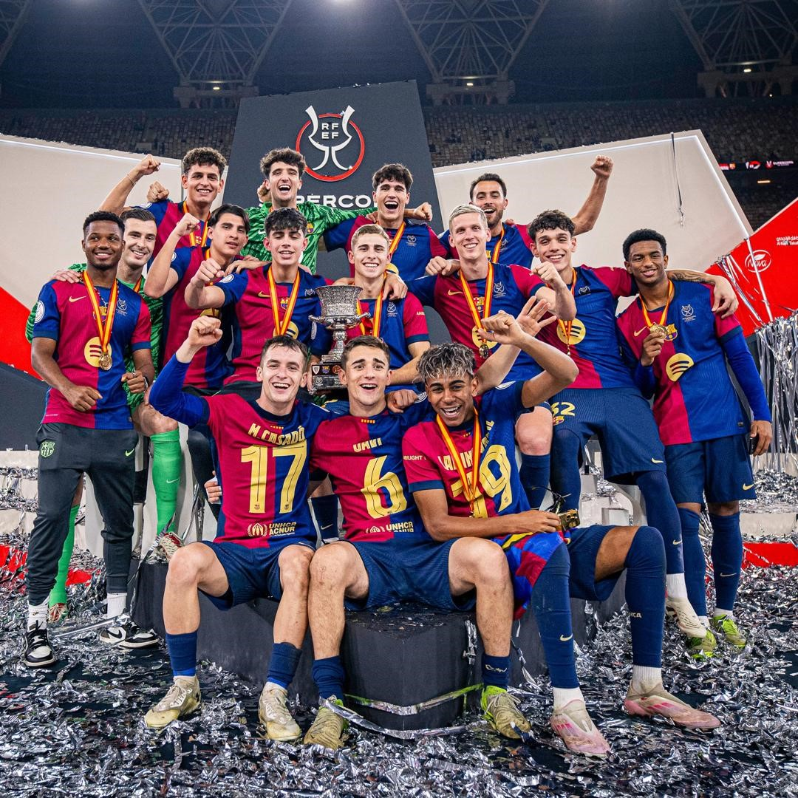

Barcelona's Trophies
FC Barcelona's trophy cabinet is a testament to their enduring success. In La Liga, they've claimed 27 titles, with victories spanning decades, including early triumphs in 1929 and more recent ones in 2023. Their dominance in the Copa del Rey is even more pronounced, with 31 wins, solidifying their reputation as cup specialists, with victories ranging from the early 1900s to 2021. On the European stage, they've lifted the UEFA Champions League trophy 5 times (1992, 2006, 2009, 2011, and 2015), showcasing their ability to compete among Europe's elite. They have also won the UEFA Super Cup 5 times (1992, 1997, 2009, 2011, 2015) and the FIFA Club World Cup 3 times (2009, 2011, 2015). Additionally, they have won the Supercopa de España 14 times. This impressive collection of silverware, spanning various competitions and eras, underscores Barcelona's consistent pursuit of excellence and their status as one of football's most decorated clubs.